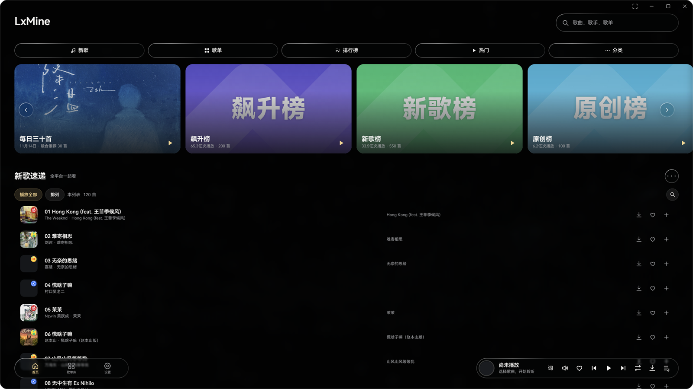
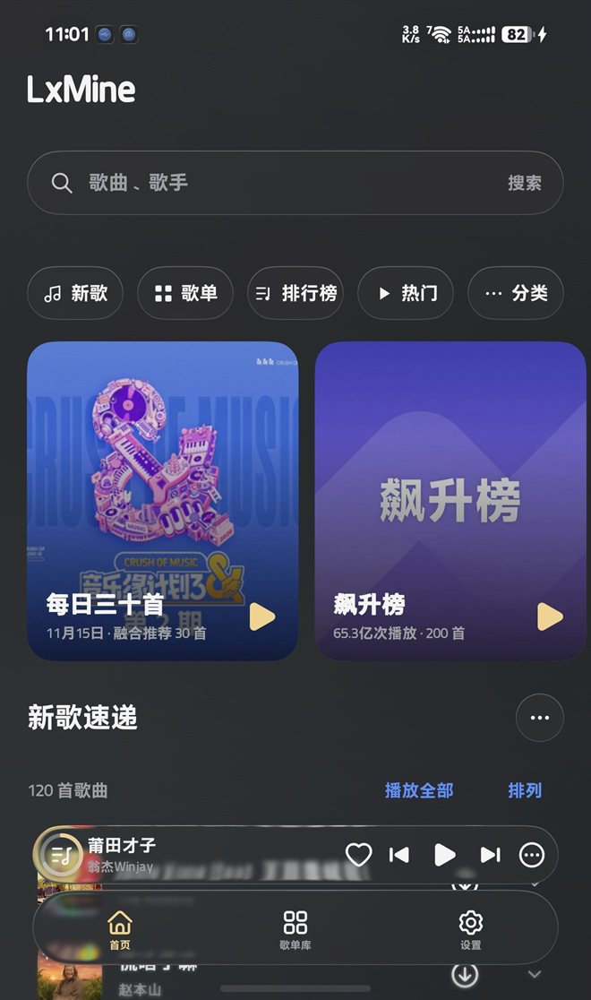
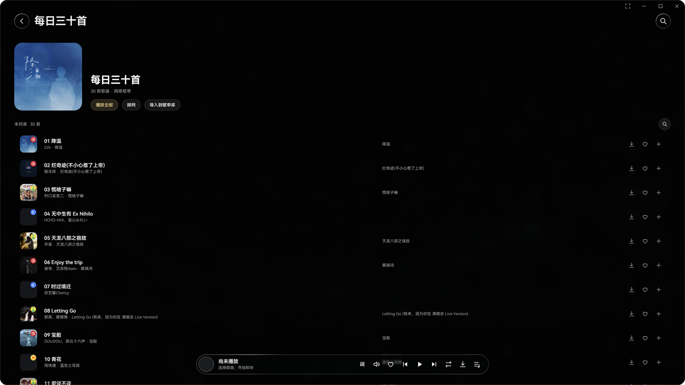

光感，融入每次操作。
指针追光、边缘折射、轻盈回弹。
玻璃材质保留音乐的颜色，也回应你的每一次触碰。

光，跟随你的指尖
独立光学材质层呈现边缘折射与环境取色，按压时保留清晰稳定的文字和图标。
舞台，留给音乐
歌词、粒子与电影镜头融入播放空间。想安静听歌时，也能在播放页关闭动效。
换个屏幕，
音乐继续。
从桌面到掌心，保留熟悉的首页、歌单和播放体验。Windows、Android 与鸿蒙原生端，各有适合自己的交互。
HarmonyOS 原生体验
适配手机、平板与车机，支持应用接续与局域网同步。
Android 原生体验
Compose 界面，Android 13 及以上带来液态玻璃与水球导航。


LxMine for Windows
v1.1.0Windows 10 / 11 · x64
下载 Windows 安装版LxMine-1.1.0-Setup.exe112.3 MB
安装包尚未进行商业代码签名，Windows 可能显示“未知发布者”。
使用 GitHub 直连 加入鸿蒙应用市场邀请测试校验下载文件
此 SHA-256 由 GitHub Release 提供，可与下载后的文件比对。
fb2b31321b190e89bcf1409265e523fc19447297d7f4468fb705c74de849d8ec加速线路通过第三方公共镜像转发 GitHub 文件。遇到下载缓慢，可切换线路或使用官方直连。
开始之前。
第一次打开，如何开始听歌？
进入「设置 → 音源」，导入你自行获得的 LX 兼容 JS / TXT 音源脚本，再开始搜索和播放。官网与安装包均不分发第三方音源脚本。
鸿蒙 HAP 如何安装？
GitHub 提供的 HiCar HAP 需要先自行签名，适用于手机、平板与车机。也可以在支持的设备上通过应用市场邀请测试安装。具体步骤见 仓库安装说明。
国内下载使用什么线路？
默认使用 GH-Proxy 公共加速服务，另有 GHFast 备用线路和 GitHub 官方直连。所有链接均指向本项目 Releases 的同一文件。你可以展开下载区的校验信息，比对 SHA-256。
在哪里反馈问题或参与开发？
欢迎在 GitHub Issues 描述设备、系统版本和复现步骤，也可以通过 Pull Request 参与开发。项目采用 GPL-3.0-only 许可证。